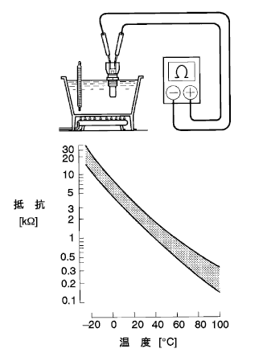

E.F.I. Water Temperature Sensor (2AZ-FE) Inspection |
| 1. Inspect E.F.I. Water Temperature Sensor |
Resistance Inspection
 |
Using SST (Toyota electrical tester), measure the resistance between the terminals.
| Tester Connection | Condition | Standard |
|---|---|---|
| 1 - 2 | Approx. 20°C | 2.30 to 2.60kΩ |
| Approx. 80°C | 0.310 to 0.326kΩ |